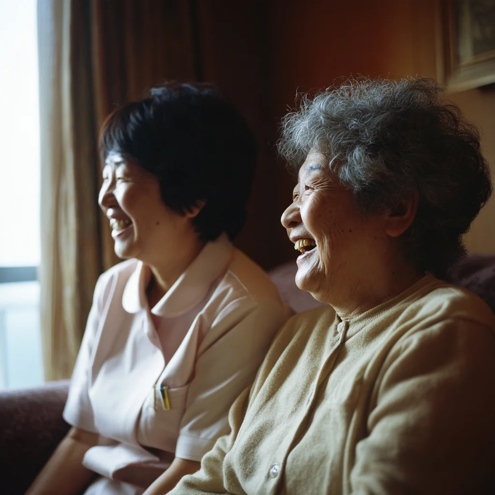
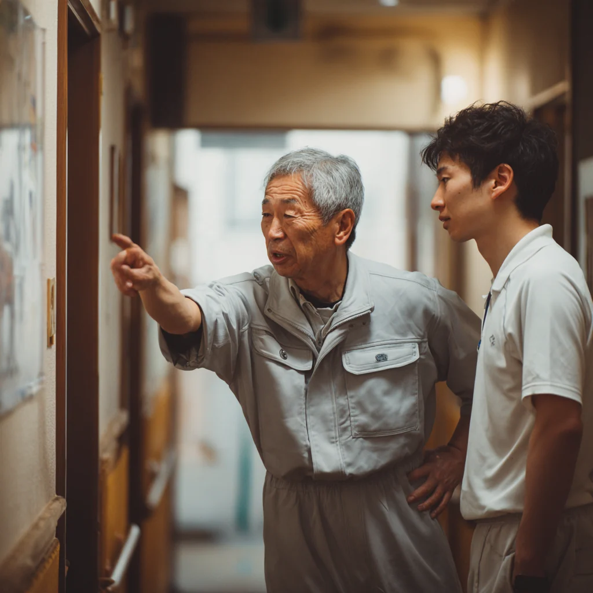
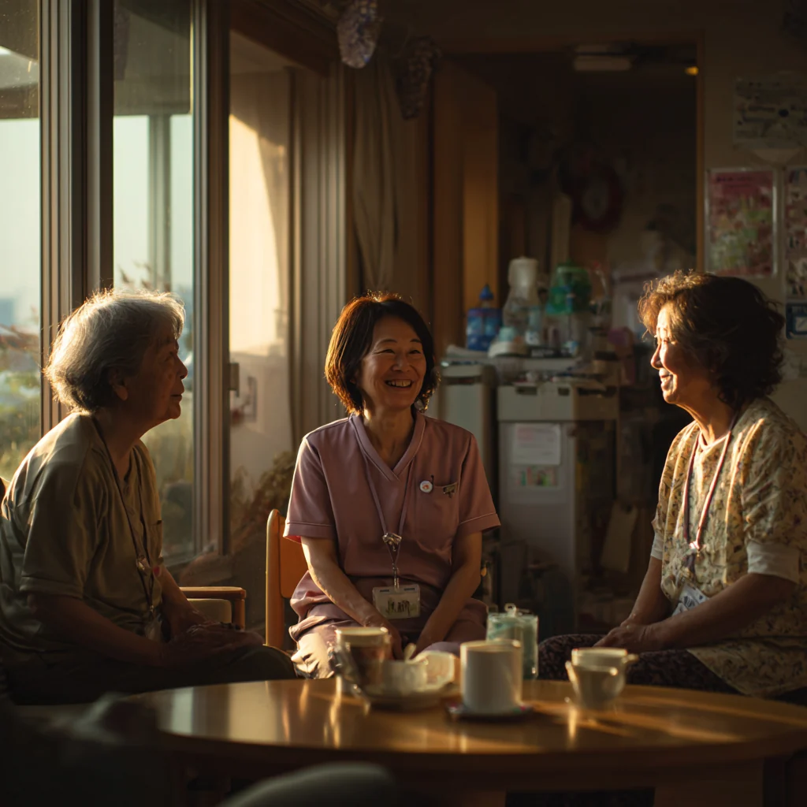

2 0 2 7 年 度 職 員 募 集
社会福祉法人 こなん会
滋賀県湖南市
手を貸すことが、
仕事になります。

資格がなくても、
入れます。
入ってから取る人のほうが多い職場です
夜勤のない
働き方もあります。
週3日・1日4時間からでも組めます

60代で入った人が、
3人います。
いちばん長い人で、もう8年目になります

辞めた人が、
戻ってくる職場です。
この3年で4人。それがいちばんの説明です
募 集 し て い る 仕 事
介護職員
正職員・パート／未経験可
生活支援員
正職員／日勤のみ
調理補助
パート／週3日から
送迎の運転
パート／朝夕のみ・普通免許
事務
正職員／PCの基本操作ができる方
働 き か た
給与
月 19.8 万円〜（正職員・賞与 年2回）
休日
年 118 日（シフト制・希望を先に出せます）
資格
取得の費用は法人が負担します
場所
湖南市・甲賀市の 4 施設（希望を聞きます）
見学
いつでも。履歴書は要りません
見学の申込
まず、半日だけ見に来てください。
社会福祉法人こなん会 0748-00-0000（平日 9:00〜17:00）
konan-kai.example.jp ／ 担当：採用係